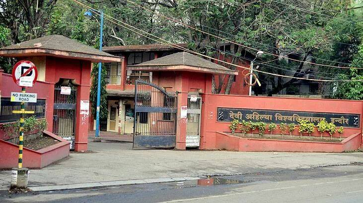

Devi Ahilya Vishwavidyalaya(DAVV)
Devi Ahilya University also called Indore University, is a university operated by the state of Madhya Pradesh at Indore, India,[2] named after Devi Ahilya Bai Holkar belonging to the Holkar dynasty of the Marathas.
University spreads over an area of 760 acres in which academic classes holds in Takshila parisar(campus) of university which spreads over an area of 510 acres and Avanti parisar(campus)which spreads over 154 acres. Nalanda parisar(campus)is for administrative and official works which spreads over an area of 100 acres.
SGSITS
Shri Govindram Seksaria Institute of Technology and Science, Indore was established in 1952. SGSITS is recognized as a leading institute in the state of Madhya Pradesh and the western region consistently during its glorious journey of sixty years. It has been ranked among top 30-40 institutes on national level (including IITs and NITs) by independent bodies. Further looking to its credentials, All India Council for Technical Education (AICTE) and University Grant Commission (UGC), New Delhi, has declared the institute as autonomous in 1989. Under the autonomous state, the institute is affiliated to the Rajiv Gandhi Prodyogiki Vishwavidhyalaya (university of technology of M.P.) Bhopal.
Indore Institute of Management(IIM)
Indian Institute of Management Indore (often abbreviated as IIM-I) is an autonomous public business school located in Indore, Madhya Pradesh in India. Instituted in 1996, IIM Indore is the sixth addition to the prestigious Indian Institute of Management (IIM) family of management schools.
International Institute of Technology(IIT)
Indian Institute of Technology Indore located in Madhya Pradesh, known as IIT Indore or IITI, is an institute of national importance established by the Government of India in 2009. It is one of the eight new IITs, started by the Ministry of Human Resource Development (India), Government of India.
The institution started functioning from 2009-10 in a temporary campus at Institute of Engineering and Technology of Devi Ahilyabai University under mentorship of IIT Bombay.
Mahatma Gandhi Medical College
MGM Medical College (MGMMC), Indore was established in 1948. Residency surgeons accompanied the European and the native troops who were stationed in the region.The institution became famous in a short span of time and Dr. Impey constructed a building exclusively for female patients.
The medical college is also known as MGMMC, Indore and is one of the oldest and the most prestigious educational institutions of the state.